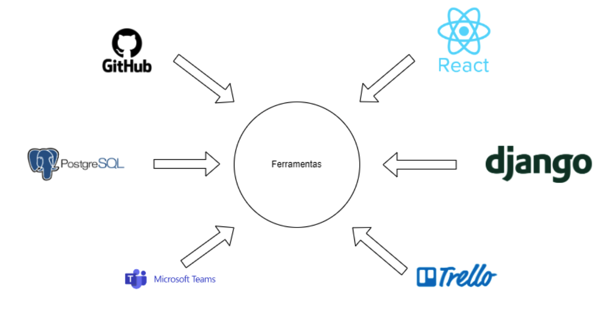

Visão do produto e do projeto
GradeWeb\ VISÃO DO PRODUTO E DO PROJETO Versão [1.1]
Histórico de Revisão
| Data | Versão | Descrição | Autor |
|---|---|---|---|
| 02/10/2023 | 1.0 | Criação do Documento | Equipe Kepler |
| 10/11/2023 | 1.1 | Correção do documento de acorod com orientações do professor | Equipe Kepler |
VISÃO DO PRODUTO E PROJETO
Software para gestão de grade com a possibilidade de colocar o curso que o estudante faz da FGA, com tela de LOGIN contendo: usuário e senha. O programa fará sugestão de matérias correspondentes ao curso escolhido, definidos por: nome da disciplina, professor, horário e quantidade de horas. Através dela, o usuário pode definir os horários em que está disponível e o software irá sugerir matérias que preenchem esses horários. O estudante fará o acompanhamento das matérias que já foram feitas, poderá adicionar projetos de extensão com seus respectivos créditos e poderá acompanhar sua frequência.
1VISÃO GERAL DO PRODUTO
1.1 Problema
Contexto: O contexto no qual se enquadra o problema que estamos abordando é o ambiente acadêmico da Faculdade do Gama (FGA), uma instituição de ensino que oferece diversos cursos de graduação. Nesse ambiente, os estudantes enfrentam desafios ao planejar suas matrículas em disciplinas, acompanhar seu progresso acadêmico e gerenciar projetos de extensão. A complexidade das grades curriculares, a disponibilidade de horários e a necessidade de conciliar várias atividades acadêmicas tornam essas tarefas desafiadoras.
Problema Encontrado: Como aprimorar a eficiência da matrícula em disciplinas e gerenciamento de projetos de extensão para os alunos da FGA, garantindo um uso mais ágil e um acompanhamento mais preciso dos resultados acadêmicos?
Esta pergunta resume a essência do problema, concentrando-se na otimização dos processos de matrícula, gestão de disciplinas e acompanhamento dos resultados acadêmicos dos alunos da Faculdade do Gama (FGA).
Identificação da Solução de Software Proposta: Para abordar esse problema, propomos o desenvolvimento de um Sistema de Gerenciamento Acadêmico específico para a FGA. Essa solução de software será uma plataforma completa que oferecerá as seguintes funcionalidades:
-
Matrícula Eficiente: O sistema fornecerá sugestões de disciplinas com base no curso escolhido pelo estudante, evitando conflitos de horários e garantindo uma matrícula mais eficiente.
-
Acompanhamento de Progresso: Os estudantes poderão acompanhar facilmente seu progresso acadêmico, visualizando as disciplinas concluídas, projetos de extensão realizados, sendo que serão cadastradas de maneira manual e também poderá acompanhar sua frequência nas aulas.
-
Gestão de Projetos de Extensão: Os estudantes vão poder adicionar informações sobre os projetos de extensão que participaram e descrever sua experiencia e assim dizer a quantidade de créditos obtidos, e informações relevantes facilitando a gestão dessas atividades.
Ao desenvolver essa solução de software, esperamos resolver os desafios enfrentados pelos estudantes da FGA, tornando seu processo acadêmico mais eficiente e transparente.
Acreditamos que essa ferramenta proporcionará uma experiência acadêmica mais fluida e ajudará os estudantes a alcançarem seus objetivos acadêmicos de forma mais eficaz.
Este documento reflete o consenso do grupo e representa nossa visão unificada sobre o problema e a solução proposta. Através do desenvolvimento desta solução de software, esperamos melhorar significativamente a experiência dos estudantes na FGA e contribuir para o sucesso acadêmico de todos.
1.2 Declaração de Posição do Produto
O produto proposto atende à necessidade premente de auxiliar os alunos da FGA na organização eficiente de suas grades horárias. O diferencial significativo deste produto reside na capacidade de os alunos configurarem suas grades de acordo com seus próprios horários, conferindo uma personalização sem precedentes.
Essa solução proporcionará aos alunos uma experiência única e altamente adaptativa, permitindo que otimizem seus horários acadêmicos de acordo com suas preferências e disponibilidade. Isso não só promove uma maior flexibilidade no processo de seleção de disciplinas, mas também proporciona uma experiência de usuário inigualável.
| Para: | Alunos da FGA |
|---|---|
| Necessidade: | Necessidade: Facilitar a visualização e montagemde grade por parte dos alunos. |
| O Gerenciador Acadêmico: | É uma aplicação WEB. |
| Que: | Visa facilitar o processo de seleção e acompanhamento de disciplinas para os alunos. |
| Ao contrário: | Ao contrário: Do SIGAA que ainda não oferece esse sistema de personalização. |
| Nosso produto: | Oferece uma funcionalidade no mercado, visto que até o presente momento não exista nenhum produto parecido. |
1.3 Objetivos do Produto
O objetivo principal é desenvolver uma ferramenta de apoio à gestão acadêmica que ajude os estudantes da FGA a planejarem e acompanharem seu progresso acadêmico.\
Secundários: Cadastros de projetos de extensões realizados.
1.4 Tecnologias a Serem Utilizadas 
| Área | Tecnologia |
|---|---|
| Front-end | React |
| Back-end | Django |
| Banco de dados | PostgreSQL |
| Controle de versão | Github |
| Comunicação | Microsoft Teams |
| Gestão | Trello |
Quadro: 2
2VISÃO GERAL DO PROJETO
2.1 Ciclo de vida do projeto de desenvolvimento de software
1. Metodologia:
-
Contexto: O contexto do projeto é a Faculdade do Gama (FGA), uma instituição de ensino superior.
-
Objetivos: Desenvolver um sistema eficaz de gerenciamento acadêmico para os estudantes da FGA.
-
Metodologia para desenvolvimento: A metodologia Ágil, com foco em Scrum e o uso da metodologia XP, serão adotadas para permitir uma resposta ágil às mudanças nas necessidades acadêmicas e aos feedbacks dos estudantes e para ter práticas que visam adaptabilidade, flexibilidade e colaboração.
-
Justificação: A metodologia Ágil é adequada para projetos complexos e em constante evolução, como o gerenciamento acadêmico. Ela permite entregas iterativas e frequentes de funcionalidades, possibilitando uma adaptação mais eficaz às mudanças nas necessidades dos estudantes. A metodologia XP permite uma melhoria da qualidade do software e na satisfação do cliente, tendo foco nas práticas que permitem uma melhor flexibilidade, adaptabilidade e colaboração da equipe.
2. Processo:
-
Contexto: O processo deve se alinhar com as necessidades de gestão de grade acadêmica, matrículas, acompanhamento do progresso acadêmico e gestão de projetos de extensão.
-
Objetivos: Manter o controle das atividades acadêmicas dos estudantes de forma eficiente.
-
Solução Proposta: Um processo ágil que incorpora sprints mensais para desenvolvimento de funcionalidades relacionadas à gestão acadêmica.
-
Justificação: O uso de sprints mensais permite um desenvolvimento iterativo e a entrega regular de melhorias no sistema, o que é crucial em um ambiente acadêmico dinâmico.
3. Procedimentos:
-
Contexto: No contexto do gerenciamento acadêmico, procedimentos específicos incluem matrícula em disciplinas, acompanhamento de progresso acadêmico e adição de projetos de extensão.
-
Objetivos: Garantir a precisão e a confiabilidade das atividades acadêmicas dos estudantes.
-
Solução Proposta: Procedimentos detalhados para matrícula, acompanhamento de progresso e adição de projetos de extensão, incluindo validações e controles.
-
Justificação: Procedimentos bem definidos garantem que as atividades acadêmicas dos estudantes sejam registradas de maneira precisa e que o sistema funcione sem erros.
4. Métodos:
-
Contexto: Métodos se referem às abordagens específicas para desenvolver funcionalidades do Gerenciador Acadêmico, como o mecanismo de sugestão de matérias.
-
Objetivos: Desenvolver funcionalidades de maneira eficaz e amigável para os estudantes.
-
Solução Proposta: Uso de métodos de design centrado no usuário para criar uma interface intuitiva e mecanismos de sugestão de matérias baseados em algoritmos de correspondência de horários.
-
Justificação: Métodos de design centrado no usuário garantem que a interface do sistema seja fácil de usar, enquanto algoritmos inteligentes tornam as sugestões de matérias precisas e relevantes.
5. Ferramentas:
-
Contexto: Ferramentas são essenciais para apoiar atividades como desenvolvimento de código, gerenciamento de banco de dados e controle de versão.
-
Objetivos: Aumentar a produtividade da equipe e garantir a confiabilidade do sistema. •Solução Proposta: Uso de ferramentas como IDEs (Ambiente de Desenvolvimento Integrado), bancos de dados PostgreSQL, Git para controle de versão e Trello para gerenciamento de tarefas.
-
Justificação: Essas ferramentas facilitam o desenvolvimento, o teste e o gerenciamento de tarefas, garantindo a qualidade e a eficiência do projeto.
2.2 Organização do Projeto
| Papel | Atribuições | Responsável | Participantes |
|---|---|---|---|
| Front-end | Responsável por criar a interface do produto e a interação e usabilidade do usuário. | Gabriel Fenelon Igor de Sousa | |
| Back -end | Responsável pelo desenvolvimento do servidor e da conexão entre o front-end e o banco de Dados. | Gustavo Alves Vitor Gabriel | |
| Banco de Dados | Responsável por agrupar os dados, documentos e informações que serão usados durante o processo de desenvolvimento. | Johnny da ponte | |
| Cliente | Criar grade, visualizar disciplinas e acompanhar frequência. | ... | Alunos da Universidade de Brasília - FGA. |
2.3 Planejamento das Fases e/ou Iterações do Projeto
| Sprint | Produto (Entrega) | Data Início | Data Fim | Entregável(eis) | Responsáveis | % conclusão |
|---|---|---|---|---|---|---|
| Sprint 1 | Definição do Produto | 28/08/2023 | 01/09/2023 | Documentação | Todos | 100% |
| Sprint 2 | Funcionalidades do GitHub | 01/09/2023 | 15/09/2023 | Arquivo no GitHub | Todos | 100% |
| Sprint 3 | Configurar o ambiente | 16/08/2023 | 29/09/2023 | Todos | 100% | |
| Sprint 4 | Visão do projeto/produto | 30/10/2023 | 01/10/2023 | Documentação | Todos | 100% |
| Sprint 5 | Slide | 02/10/2023 | 02/10/2023 | Slides de apresentação | Matheus / Caio | 100% |
| Sprint 6 | Desenvolvimento do protótipo 1 | 04/10/2023 | 20/11/2023 | Front-end | ||
| Sprint 7 | Desenvolvimento inicial de 4 telas | 16/10/2023 | 12/11/2023 | Código | Front-end | |
| Sprint 8 | Declaração de escopo do software | 21/10/2023 | 25/10/2023 | Documentação/Arquivo no GitHub | Todos | 100% |
| Sprint 9 | Documento de arquitetura | 26/10/2023 | 03/11/2023 | Documentação/Arquivo no GitHub | Todos | 100% |
2.4 Matriz de Comunicação | Descrição | Área/Envolvidos | Periodicidade | Produtos Gerados | |-----------------------------------------------|---------------------|------------------|-----------------------------------------------| | Reuniões sobre o andamento do projeto. | Equipe do Projeto | Semanal (Até 3 vezes) | Ata de reunião, Relatório de situação do projeto, Funcionalidades do produto | | Acompanhamento dos integrantes e suas devidas funções | Equipe do Projeto | Semanal | Comunicar situação do projeto, Ata de reunião, Relatório de situação do projeto | | Comunicar situação do projeto | Equipe, Prof/Monitor | Semanal | Ata de reunião, Relatório de situação do projeto |
2.5 Gerenciamento de Riscos
Gerenciamento de Riscos do Projeto - Quadro de Acompanhamento de Riscos:
| Risco | Grau de Exposição | Mitigação | Plano de Contingência |
|---|---|---|---|
| Atraso na Entrega do Projeto | Alto | Estabelecer comunicação regular com os participantes para acompanhar o andamento da entrega. | Revisar o cronograma para minimizar o impacto do atraso. |
| Mudanças nos Requisitos | Moderado | Realizar revisões regulares dos requisitos e manter um processo de gerenciamento de mudanças bem definido. | Avaliar o impacto das mudanças e priorizar os requisitos de acordo com o valor para o projeto. |
| Falta de Experiência da Equipe | Alto | Investir em treinamento e capacitação da equipe. | Ter acesso a consultores ou especialistas para orientar a equipe em momentos de dificuldade. |
| Problemas de Integração de Tecnologias | Alto | Realizar testes de integração frequentes. | Identificar possíveis alternativas de tecnologia caso problemas de integração persistentes ocorram. |
| Mudanças nas Regulamentações | Moderado | Manter um monitoramento constante das regulamentações relevantes. | Adotar medidas de conformidade em tempo hábil se ocorrerem mudanças nas regulamentações. |
OBS: As explicações contidas na tabela acima foram discutidas durante reuniões com a equipe de desenvolvedores.
2.6 Critérios de Replanejamento
Riscos Críticos Realizados: Se um risco crítico, identificado anteriormente no plano
de gerenciamento de riscos, se materializar e tiver um impacto significativo no projeto,
será necessário um replanejamento. Isso inclui riscos que afetam o escopo, prazo ou
qualidade do projeto. Os planos de mitigação e contingência serão acionados conforme
necessário.
Página 9 de 14
•Mudanças nas Necessidades dos Usuários: Se houver mudanças significativas nas necessidades ou requisitos do produto, que não possam ser acomodadas dentro dos limites do escopo e cronograma existentes, um replanejamento será considerado.
•Mudanças Legais ou Regulatórias: Alterações nas regulamentações que afetem direta ou indiretamente o projeto podem exigir um replanejamento para garantir a conformidade.
•Recursos Insuficientes ou Disponibilidade Limitada: Se recursos essenciais, como os integrantes do grupo, hardware ou software, se tornarem insuficientes ou limitados além do que foi inicialmente previsto, um replanejamento será necessário para ajustar o escopo ou prazo do projeto.
•Desvios Significativos do Cronograma: Se o projeto começar a desviar significativamente do cronograma planejado, seja devido a atrasos na entrega, problemas de integração ou outros fatores, um replanejamento será necessário para recuperar o atraso ou ajustar as metas.
•Mudanças nas Tecnologias ou Ferramentas: Se mudanças significativas nas tecnologias ou ferramentas utilizadas no projeto afetarem o desenvolvimento ou a funcionalidade do sistema, um replanejamento será considerado.
3PROCESSO DE DESENVOLVIMENTO DE SOFTWARE
Imagem: 2
 {width="5.0in"
height="2.3958333333333335in"}
{width="5.0in"
height="2.3958333333333335in"}
Metodologia de Desenvolvimento de Software -- Scrum e XP
Nesta seção, a equipe registra as decisões tomadas quanto à metodologia de desenvolvimento de software, que será baseada no framework Scrum e na metodologia XP, para o projeto do Gerenciador Acadêmico da FGA.
Decisões:
| • | Adoção do Scrum: A equipe | | | optou por adotar o framework | | | Scrum como uma das metodologia | | | de desenvolvimento de software | | | para este projeto. O Scrum é | | | escolhido |
Página 10 de 14
| • | devido à sua abordagem ágil e | | | flexível, que se adequa bem ao | | • | ambiente acadêmico em constante | | | evolução. | | | | | | Papéis Scrum:\ | | | oScrum Master: O projeto | | | contará com um Scrum Master, | | | cuja responsabilidade é | | | garantir que a equipe siga as | | | práticas e princípios do Scrum, | | | remover impedimentos e | | | facilitar as reuniões do Scrum. | | | | | | oProduct Owner: Um Product | | | Owner será designado para | | | definir e priorizar os | | | requisitos do Gerenciador | | | Acadêmico com base nas | | | necessidades dos usuários e dos | | | stakeholders. | | | | | | Sprints: O desenvolvimento | | | será dividido em sprints | | | mensais, cada um com duração de | | | quatro semanas. Essa abordagem | | | permitirá entregas regulares de | | | funcionalidades e ajustes com | | | base no feedback. |
•Reuniões Scrum: A equipe realizará as seguintes reuniões do Scrum:\ oReuniões Periódicas: 3 Reuniões por semana para acompanhar o progresso, compartilhar atualizações e identificar impedimentos.
oPlanejamento de Sprint: Reunião de planejamento de sprint no início de cada sprint para definir os objetivos e selecionar as tarefas a serem realizadas durante o sprint.
oRevisão de Sprint: Reunião de revisão de sprint ao final de cada sprint para revisar o trabalho concluído e obter feedback dos stakeholders.
oRetrospectiva de Sprint: Reunião de retrospectiva de sprint para avaliar o desempenho da equipe e identificar oportunidades de melhoria.
•Priorização de Requisitos: O Product Owner será responsável por priorizar os requisitos com base nas necessidades dos usuários e nos objetivos do projeto. Isso garantirá que as funcionalidades mais importantes sejam entregues primeiro.
A seguir, está um diagrama de fluxo de trabalho que ilustra as principais etapas do processo de desenvolvimento dentro do framework Scrum:
Página 11 de 14
 {width="5.0in"
height="3.6777777777777776in"}
{width="5.0in"
height="3.6777777777777776in"}
Imagem: 3
Este diagrama serve como um guia visual para as atividades e interações da equipe durante o desenvolvimento do Gerenciador Acadêmico, de acordo com a metodologia Scrum escolhida.
•Adoção do XP: A equipe optou por adotar o framework XP como uma das metodologias de desenvolvimento de software para este projeto. O XP é escolhido devido às suas práticas que visam adaptabilidade, flexibilidade e colaboração., que se irão melhorar a qualidade do software e a satisfação do cliente.
•Práticas do XP\ oIntegração Contínua: As alterações no código são integradas continuamente ao repositório principal, permitindo a detecção precoce de conflitos e a manutenção de um código sempre funcional.
oProgramação em Pares: Os desenvolvedores trabalham em pares, onde um escreve o código enquanto o outro revisa. Isso promove a colaboração, compartilhamento de conhecimento e melhoria da qualidade do código.
oPadronização do código: Ao adotar práticas de padronização de código, a equipe na XP fortalece sua coesão, favorece a eficiência colaborativa e sustenta a manutenção de um código fonte que é coeso e claro, mesmo quando produzido por diversos membros da equipe.
Página 12 de 14
| 4 | Detalhamento de atividades do | | | projeto | | 4.1 | | | | Atividade 1 |
+-----------------+-----------------+-----------------+-----------------+ | Atividade | Método | * | Entrega | | | | Ferramenta | | +=================+=================+=================+=================+ | Planejamento | Scrum | Quadro | 28/09/2023 | | de Sprint* | | | | +-----------------+-----------------+-----------------+-----------------+
| 4.2 | Atividade 2 |
+-----------------+-----------------+-----------------+-----------------+ | Atividade | Método | * | Entrega | | | | Ferramenta | | +=================+=================+=================+=================+ | Definição de | Brainstorm | Quadro | 18/09/2023* | | Objetivos | | | | +-----------------+-----------------+-----------------+-----------------+
| 4.3 | Atividade 3 |
+-----------------+-----------------+-----------------+-----------------+ | Atividade | Método | * | Entrega | | | | Ferramenta* | | +=================+=================+=================+=================+ | Seleção de | Priorização | Quadro | 18/09/2023 | | Tarefas | | | | +-----------------+-----------------+-----------------+-----------------+
| 4.4 | Atividade 4 |
+-----------------+-----------------+-----------------+-----------------+ | Atividade | Método | * | Entrega | | | | Ferramenta | | +=================+=================+=================+=================+ | | Agile* | IDE (VSCode) | 19/11/2023 | | Desenvolvimento | | | | +-----------------+-----------------+-----------------+-----------------+
Página 13 de 14
5LIÇÕES APRENDIDAS\ 5.1 Unidade 1\ Comunicação e Transparência: Identificamos a necessidade de melhorar a comunicação entre os membros da equipe.
Ação: Implementar reuniões periódicas mais estruturadas para compartilhar atualizações e impedimentos.
6PRÓXIMOS PASSOS1
| •\ | Iniciem a preparação do | | •\ | backlog do produto, redigindo | | •\ | requisitos funcionais e não | | • | funcionais (se existirem); | | | | | | Revejam definições de Sprints | | | e releases para acomodar os | | | requisitos dentro das | | | capacidades de cada equipe; | | | | | | Priorize requisitos de acordo | | | com as entregas de valores | | | determinadas nas releases e as | | | sprints planejadas; | | | | | | Estudem o que é um MVP -- | | | Minimum Viable Product. Pensem | | | assim: O cliente quer ver | | | funcionando uma demonstração do | | | produto. Além disso, as | | | tecnologias adotadas são | | | suficientes para o | | | desenvolvimento do produto? |
7REFERÊNCIAS BIBLIOGRÁFICAS
• 06/01/2023.
•
Página 14 de 14